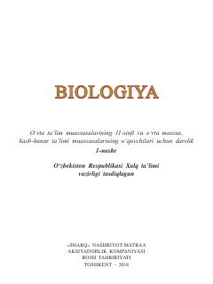

B111-sinf o'quvchilari uchun biologiya va ekologiya fanidan davlat ta'lim standartlari asosidagi darslik.
Mazkur darslik umumiy o'rta ta'lim maktablarining 11-sinfi uchun mo'ljallangan bo'lib, hayotning biogeotsenotik va biosfera darajasidagi umumbiologik qonunlar hamda organik olam filogenezini o'rganishga bag'ishlangan. Kitobda ekologiya va hayot, tirik organizmlarning tizimli tuzilishi hamda tabiatdagi ekologik barqarorlikni ta'minlash masalalari yoritilgan.